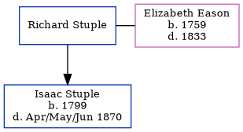

Richard Stuple
[ Home ] | [ Calendar ] | [ Surnames Index ] | [ Family History ]Richard Stuple was the 4 times great-grandfather of <a href="I1.html">Nigel Horne</a> and married Elizabeth Eason (with whom he had 1 child, Isaac) at St. Mary's, Reculver, Kent, England on Oct 12, 1799<span class="citation">1</span> (Widow).
Children
- Isaac was born in 1799
Citations
- Kent, Canterbury Archdeaconry marriages 1538-1928 - Findmypast
Media
Kent, Canterbury Archdeaconry marriages 1538-1928 - GBPRS/CANT/M/97141403/1
Kent, Canterbury Archdeaconry banns 1754-1928 - GBPRS/CANT/M/94045460/1
Family Tree
Generated by Ged2Site. Last updated on Jul 20, 2025